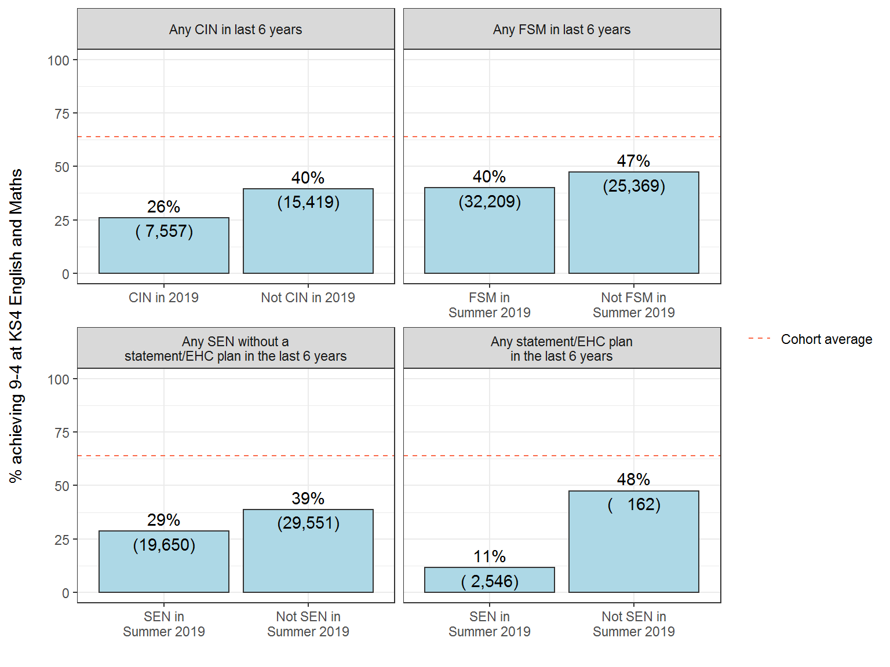
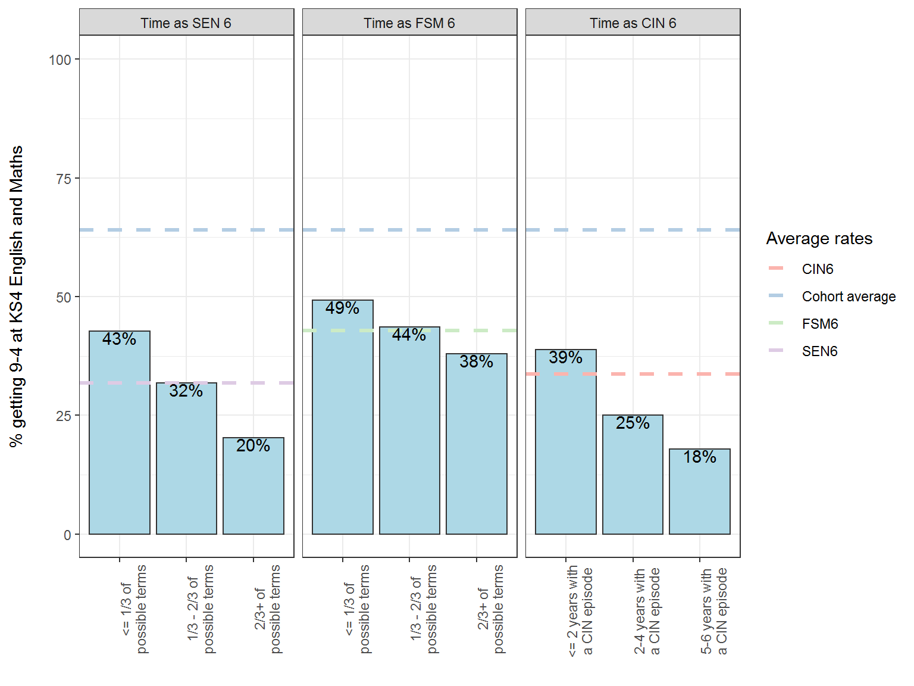

Follow us


Download text version of this report
The Children’s Commissioner’s Office’s programme of data work on childhood vulnerability aims to shine a light on the children growing up with additional needs or issues that may need more help to succeed. These include educational disadvantage, severe poverty, special educational needs or disabilities, risks of abuse and neglect, mental health needs, youth violence and exploitation, homelessness, and other issues. Our work on this area has set out to show the scale and nature of childhood vulnerability and how they interact.
Many children grow up facing at least one vulnerability: even before the pandemic – 2.3 million children in England were growing up in a family vulnerable family with a serious and complex need1. Even more concerning are the children who face multiple overlapping vulnerabilities – risks that compound each other and collectively chip away at children’s ability to thrive. Unfortunately, it is these kinds of more severe vulnerabilities where data and insights are lacking the most.
Our work on vulnerability has made valuable inroads, by showing the 100,000 children living in a household affected by all of the so called ‘toxic trio’ issues – domestic abuse, parental mental health issues and parental drug and alcohol dependency2 – or the 140,000 teenagers with two or more high needs (including dropping out of school, special educational needs, or having a social worker)3. Despite this, it is still too difficult to assess the numbers, experiences and outcomes of the children that we should be most worried – those living with multiple and persistent vulnerabilities.
One area where we can make more progress is in understanding the impact of vulnerability on education. It is well known that disadvantaged children tend, on average, to have lower levels of educational attainment. Children eligible for free school meals (FSM) are only around half likely as likely as the rest of the cohort to achieve a strong pass in English and Maths GCSE. Furthermore, children with identified special educational needs (SEN) are only a quarter as likely to achieve this benchmark, compared to children without SEN.4. The Department for Education’s Child in Need (CIN) review5 indicates that children who have ever needed a social worker are around a half as likely to achieve this, compared to other children. More recent evidence from the Bristol and Oxford Universities shows that within the group of children too often we consider one vulnerability at a particular point in time. These separate pieces of evidence are powerful and important on their own, but what has too often been missed is that in many cases they could be examining the same child from three different lenses. In other words, these groups often overlap – and most vulnerable children will belong to more than one group.
Data analysed for this report, focusing on the cohort of children taking GCSE exams in 2019, shows the degree of overlap. Of the children who have needed a social worker in the past six years, 4 in 5 also had another disadvantage (FSM or SEN) in the past six years. Of the children who had been FSM in the past six years, more than half also been CIN or had SEN over that period as well. And nearly half of the children who had had SEN over the past six years and had also been CIN or FSM over that period. As these disadvantages compound, so too does the additional support that may needed. Some children – around 1 in 25 of the Year 11 cohort – had all three of these characteristics.
This report also shows the extent to which these issues persist over time. It finds that less than half (44%) of the pupils who have had a social worker have only done so for one year; the rest have had a social worker for multiple years. Among those who have had SEN, only around three quarters have done so for more than a year, and among those who have had FSM this is more than four-fifths.
As well as looking at the intersections of these different groups, this analysis also looks within these groups to see how education outcomes vary amongst children with needs identified at different thresholds – for example, children in care or children with an Education, Care and Health Plan (EHCP).
This report finds only around 2 in 5 of the broader group of children – those who have been CIN, FSM or SEN – achieved a pass in GCSE English and Maths in 2019. But children who only have one vulnerability will still do well on average. For example, nearly two thirds of children who only had a social worker – and not FSM or SEN – achieved these passes. The same is true of children who only had FSM. These rates are actually in line with the average pass rate across all pupils.
But as vulnerabilities coincide and become more severe or persistent, outcomes can rapidly deteriorate. Of the children who have had a social worker and been on FSM and had SEN, only 13% passed GCSE English and Maths. The rate falls to as low as 4% if the child was continually on FSM throughout school and also had an EHCP.
The proportions of children who have these various types and levels of need is therefore a crucial way of understanding the overall of educational vulnerability. Overall, these groups collectively account for the clear majority of children failing to achieve basic qualifications in England. Of all the children not achieving levels 9-4 in GCSE English and Maths, nearly three-quarters – 72% – have been CIN, FSM or SEN in the last six years.
We also need to recognise that these rates vary considerably across the country: in some local areas, nearly 3 in 4 pupils have been CIN, FSM or SEN in the past six years. But there is also wide variation in the outcomes that these children achieve: in some areas more half of these pupils managed to pass English and Maths GCSE, whereas in other areas less than a third of this group managed to do so.
With the data available, it is difficult to explain what is driving this local variation, even after taking into account other local factors including deprivation and rates of access for SEN and CIN support. We still need to know more about what it is that enables some of these highly vulnerable children to succeed – either because of the area they live in, or because of personal or family factors that enable them to thrive regardless. What is clear, however, is that re-examining the data on disadvantaged children in this way helps us to see which groups – on average – are the most left-behind and need the most help
This analysis examines the Key Stage 4 (KS4) results for the following groupings of disadvantaged and vulnerable children:
We examine Key Stage 4 results for children at the intersections of these groups to examine what (if any) additional disadvantage children face when they have multiple identified vulnerabilities. We also look within these groups and examine how KS4 results vary amongst children with needs identified at higher thresholds. We investigate this amongst the most recent cohort of children to take GCSEs that were not affected by the COVID-19 pandemic - those who sat their GCSEs in summer 2019. The main outcome measure in this analysis is whether these children achieved Levels 9-4 in English and Maths GCSE.
Our key questions to answer are:
What are the Key Stage 4 results for children with varying combinations of these CIN 6, FMS 6 and SEN 6 characteristics?
How do results vary in relation to the length of time that they have been CIN/FSM eligible/identified SEN over the past 6 years?
How do these results vary by local authority for children with combinations of these characteristics?
Overall this analysis echoes previous work suggesting that large numbers of children have these identified vulnerabilities and that (on average) they have notably worse outcomes at Key Stage 4. However, the key addition is that it also demonstrates there is considerable variation within these groups in children’s Key Stage 4 results based on their combinations of these vulnerabilities.
Children with any of these CIN/FSM/SEN 6 – that is, CIN 6 or FSM 6 or SEN 6 – characteristics represent a substantial proportion of this cohort, accounting for just under 1 in 2 children sitting GCSE exams in 2019.
They have notably lower rates of achieving levels 9-4 in KS4 English and Maths. Around 4 in 10 of this group achieve at least a level 4 in these subjects compared to a cohort average of just over 6 in 10. Around 1 in 4 achieve at least a level 5, compared to 4 in 10 in the cohort overall.
Children with any of these CIN/FSM/SEN 6 characteristics account for 72% of the children in this cohort not achieving levels 9-4 in KS4 English and maths and 61% of those not achieving levels 9-5.
Rates of achieving at least level 4 in these subjects are lowest among those that have had an EHC plan in the last 6 years (12%), and among those that have been looked after at some point in the last 6 years (23%).
The specific combination of children’s CIN/FSM/SEN 6 status makes substantial differences to their performance at KS4: Nearly two thirds of children that are CIN 6 only – i.e. CIN 6 but not FSM 6 and not SEN 6 – achieve at least a level 4 in English and Maths. This is similar to the average rate for the cohort as a whole (64%). The lowest rates are amongst children with an EHC plan in the last 6 years in combination with an open CIN episode and being FSM eligible throughout the 6 years achieving at least a level 4 in English and Maths (4%).
Children with an EHC plan in the last 6 years combination with other CIN/SEN/FSM 6 characteristics have the lowest rates of achieving at least a level 4 in English and Maths.
There is substantial variation by local authority in rates of these children achieving at least a level 4 in English and Maths.
We base our analysis on the cohort of children who took Key Stage 4 (KS4) exams in 2019 and can be matched in the Summer term school census 2019 (n = 548,610). Note that since the School Census primarily covers state-funded schools only, the resulting matched cohort largely excludes who were not enrolled in a state school6.
We then link this base cohort to every termly pupil level school census over the six year period from 2013/14 to 2018/19 (via the anonymised pupil matching reference) in order to add information on each pupil’s SEN and FSM status in each term during this period7. We also link in the children in need (CIN) census datasets over the same time period to add information on whether each pupil had an open CIN episode with children’s social care.
We then link this base cohort to the termly pupil level school census (hereafter the NPD) and annual children in need census datasets from 2014-2019 (inclusive) via their anonymised pupil matching reference and UPN respectively8. This creates a longitudinal record of this cohort’s number of terms with identified SEN and FSM eligibility as well as years when they have an open CIN episode with children’s services.
The main disadvantage indicators in this analysis are:
Table 1 and Figure 1 below show the proportions of the cohort that were CIN/SEN/FSM in the last 6 years. Just under 1 in 2 children in this cohort had any of these characteristics in the last 6 years and around 1 in 20 had all 3 at some point.
Table 1: Proportions of cohort that are CIN 6/SEN 6 or FSM 6
| Disadvantage type | Disadvantage indicator | Number of pupils | % of cohort |
|---|---|---|---|
| CIN | Any CIN in last 6 years | 68138 | 12 |
| FSM | Any FSM in last 6 years | 134207 | 24 |
| SEN | Any SEN in last 6 years | 160444 | 29 |
| Any SEN without a statement/EHC plan in the last 6 years | 144938 | 26 | |
| Any statement/EHC plan in the last 6 years | 22581 | 4 | |
| Summary | Any CIN/SEN/FSM in last 6 years | 248298 | 45 |
| CIN 6 & FSM 6 & SEN 6 in last 6 years | 23960 | 4 | |
| Any CIN/SEN/FSM in last 6 years exc. EHC plans | 242710 | 44 | |
| CIN 6 & FSM 6 & SEN 6 in last 6 years exc. EHC plans | 20257 | 4 |
Figure 1: Venn diagram of intersections between CIN 6, SEN 6 and FSM 6 groups
Figure 1 also shows a notable degree of overlap between children in these groups. For example, 79% of the pupils in the CIN 6 group are also a member of the SEN 6 or FSM 6 groups. More than half – 57% – of the pupils in the FSM 6 group are also in the SEN 6 or CIN 6 groups. And nearly half of the pupils in the SEN 6 group are also in the FSM 6 or CIN 6 groups.
Tables 2, 3, 4 and demonstrates that these overlaps are larger than would be expected if the FSM 6, SEN 6 and CIN 6 were distributed randomly. Table 2 demonstrates CIN 6 children are over twice as likely to have had any identified SEN in the past 6 years compared to non-CIN 6 children.
Table 2: Proportions of CIN 6 group that are also SEN 6
| SEN 6 | CIN 6 | Not CIN 6 |
|---|---|---|
| Not SEN 6 | 45% (30,352) | 74% (357,814) |
| SEN 6 | 55% (37,786) | 26% (122,658) |
Table 3 demonstrates a similar strong association between children being CIN 6 and FSM 6. CIN 6 children are nearly three times as likely to have also been eligible for free school meals in the past 6 years compared to non-CIN 6 children.
Table 3: Proportions of CIN 6 group that are also FSM 6
| FSM 6 | CIN 6 | Not CIN 6 |
|---|---|---|
| FSM 6 | 59% (39,900) | 20% (94,307) |
| Not FSM 6 | 41% (28,238) | 80% (386,165) |
Table 4 demonstrates a similar strong association between children being SEN 6 and FSM 6. CIN 6 children are nearly twice as likely to have also been eligible for free school meals in the past 6 years compared to children with no identified SEN.
Table 4: Proportions of SEN 6 group that are also FSM 6
| FSM 6 | Not SEN 6 | SEN 6 |
|---|---|---|
| FSM 6 | 19% (73,442) | 38% (60,765) |
| Not FSM 6 | 81% (314,724) | 62% (99,679) |
Table 5 and Figure 2 demonstrates the proportions of the cohort with identified higher threshold needs. Just over 1% of the cohort have been looked after in the last 6 years (LAC 6). Around 1 in 10 children have been either looked after, had an EHC plan or been FSM eligible for all of the possible terms in the last 6 years.
Table 5: Proportions of cohort with identified higher threshold needs in the last 6 years
| Characteristic | Number of pupils | % of cohort |
|---|---|---|
| EHC plan in last 6 years | 22581 | 4.1 |
| LAC in last 6 years | 7540 | 1.4 |
| FSM for all possible terms in last 6 years - Persistent FSM | 38848 | 7.1 |
| Any EHC/LAC/Persistent FSM in last 6 years | 62020 | 11.3 |
| CIN 6 & FSM 6 & SEN 6 in last 6 years | 214 | 0.0 |
Figure 2: Venn diagram of intersections between LAC 6, EHC 6 and Persistent FSM groups
Table 6 below demonstrates the relationship between these demographic characteristics and gender. It shows that there is mostly little relationship with gender, however those children who are SEN 6 are more likely to be male, driven by the strong gender disparity in the EHCP 6 group (72% of whom are male). Since children in the various SEN groups are more likely to be male, the various combinations that involve SEN are also more likely to be male.
Table 6: Relationship between gender and disadvantage indicators
| Disadvantage type | Disadvantage indicator | Female | Male |
|---|---|---|---|
| CIN | Children looked after at any point in the last 6 years | 48% (3,641) | 52% (3,899) |
| Any CIN in last 6 years | 50% (33,772) | 50% (34,366) | |
| Any Child Protection Plan in the last 6 years | 52% (6,488) | 48% (6,055) | |
| FSM | Any FSM in last 6 years | 49% (65,829) | 51% (68,378) |
| Children persistently FSM eligible over 6 years | 48% (18,715) | 52% (20,133) | |
| SEN | Any SEN in last 6 years | 39% (61,938) | 61% (98,506) |
| Any SEN without a statement/EHC plan in the last 6 years | 40% (57,722) | 60% (87,216) | |
| Any statement/EHC plan in the last 6 years | 28% (6,211) | 72% (16,370) | |
| Summary | Any CIN/SEN/FSM in last 6 years | 45% (111,848) | 55% (136,450) |
| Any CIN/SEN/FSM in last 6 years exc. EHC plans | 45% (110,390) | 55% (132,320) | |
| CIN 6 & FSM 6 & SEN 6 in last 6 years | 42% (10,002) | 58% (13,958) | |
| CIN 6 & FSM 6 & SEN 6 in last 6 years exc. EHC plans | 44% (8,986) | 56% (11,271) | |
| Cohort average | 49% (267,686) | 51% (280,924) |
Table 7 shows that pupils with English as an additional language are slightly underrepresented in the CIN 6 and SEN 6 groups, but slightly overrepresented in the FSM 6 group.
Table 7: Relationship between first language and disadvantage indicators
| Disadvantage type | Disadvantage indicator | English as additional language | English as first language | Unknown |
|---|---|---|---|---|
| CIN | Children looked after at any point in the last 6 years | 13% (958) | 86% (6,469) | 1% (113) |
| Any CIN in last 6 years | 14% (9,569) | 85% (57,981) | 1% (588) | |
| Any Child Protection Plan in the last 6 years | 11% (1,368) | 88% (11,046) | 1% (129) | |
| FSM | Any FSM in last 6 years | 20% (27,419) | 79% (105,803) | 1% (985) |
| Children persistently FSM eligible over 6 years | 19% (7,346) | 80% (31,272) | 1% (230) | |
| SEN | Any SEN in last 6 years | 14% (23,040) | 85% (136,447) | 1% (957) |
| Any SEN without a statement/EHC plan in the last 6 years | 15% (21,177) | 85% (122,865) | 1% (896) | |
| Any statement/EHC plan in the last 6 years | 11% (2,517) | 88% (19,940) | 1% (124) | |
| Summary | Any CIN/SEN/FSM in last 6 years | 18% (43,740) | 82% (203,097) | 1% (1,461) |
| Any CIN/SEN/FSM in last 6 years exc. EHC plans | 18% (43,113) | 82% (198,155) | 1% (1,442) | |
| CIN 6 & FSM 6 & SEN 6 in last 6 years | 10% (2,442) | 89% (21,240) | 1% (278) | |
| CIN 6 & FSM 6 & SEN 6 in last 6 years exc. EHC plans | 10% (2,035) | 89% (17,960) | 1% (262) | |
| Cohort average | 16% (90,418) | 83% (455,764) | 0% (2,428) |
Table 8 shows that while ethnic minority pupils are not overall over or underrepresented in the CIN 6 group, they are overrepresented in the FSM groups and underrepresented in the SEN groups.
Table 8: Relationship between ethnicity and disadvantage indicators
| Disadvantage type | Disadvantage indicator | Asian (exc Chinese) | Black | Chinese | Mixed | Other | White - British | White - other |
|---|---|---|---|---|---|---|---|---|
| CIN | Children looked after at any point in the last 6 years | 6% (475) | 8% (638) | 0% (11) | 8% (592) | 3% (191) | 67% (5,072) | 5% (366) |
| Any CIN in last 6 years | 9% (5,808) | 7% (5,034) | 0% (119) | 7% (4,533) | 2% (1,174) | 69% (46,686) | 5% (3,489) | |
| Any Child Protection Plan in the last 6 years | 7% (912) | 6% (699) | 0% (18) | 7% (886) | 1% (164) | 72% (8,998) | 5% (599) | |
| FSM | Any FSM in last 6 years | 12% (15,726) | 11% (14,204) | 0% (224) | 7% (9,476) | 3% (3,854) | 60% (81,168) | 5% (7,171) |
| Children persistently FSM eligible over 6 years | 12% (4,835) | 8% (3,081) | 0% (65) | 7% (2,605) | 3% (1,245) | 64% (24,869) | 4% (1,521) | |
| SEN | Any SEN in last 6 years | 9% (13,732) | 6% (10,368) | 0% (334) | 5% (8,234) | 2% (2,579) | 71% (113,249) | 6% (9,356) |
| Any SEN without a statement/EHC plan in the last 6 years | 9% (12,407) | 6% (9,389) | 0% (292) | 5% (7,451) | 2% (2,357) | 70% (102,017) | 6% (8,659) | |
| Any statement/EHC plan in the last 6 years | 8% (1,729) | 6% (1,343) | 0% (59) | 5% (1,155) | 1% (310) | 73% (16,581) | 5% (1,054) | |
| Summary | Any CIN/SEN/FSM in last 6 years | 10% (25,940) | 8% (19,853) | 0% (552) | 6% (14,483) | 2% (5,474) | 66% (163,450) | 6% (14,471) |
| Any CIN/SEN/FSM in last 6 years exc. EHC plans | 10% (25,407) | 8% (19,628) | 0% (530) | 6% (14,272) | 2% (5,405) | 66% (159,283) | 6% (14,189) | |
| CIN 6 & FSM 6 & SEN 6 in last 6 years | 6% (1,407) | 7% (1,772) | 0% (15) | 7% (1,703) | 1% (319) | 72% (17,259) | 4% (991) | |
| CIN 6 & FSM 6 & SEN 6 in last 6 years exc. EHC plans | 6% (1,164) | 7% (1,450) | 0% (11) | 7% (1,468) | 1% (272) | 72% (14,599) | 4% (855) | |
| Cohort average | 11% (58,389) | 6% (31,602) | 0% (2,011) | 5% (27,524) | 2% (9,680) | 69% (376,292) | 6% (35,278) |
Table 9 below demonstrates that children with these disadvantage indicators over-represent slightly amongst children in special schools and alternative provision or pupil referral units (PRUs) than the rest of the cohort. For example, 4% of children that have been CIN/FSM or SEN in the last 6 years were in a special school at Key Stage 4 compared to 2% of the overall cohort. These differences are larger for those at higher thresholds, for example 9% of those looked after at any point in the last 6 years were in a PRU or alternative provision at key stage 4 compared to 1% of the entire cohort.
Table 9: Proportions of children that are CIN/FSM/SEN 6 by school type at Key Stage 4
| Disadvantage type | Disadvantage indicator | Mainstream - Free school | Mainstream - LA maintained | Mainstream - academy | Other | PRU/AP | Special school |
|---|---|---|---|---|---|---|---|
| CIN | Any CIN in last 6 years | 3% (1,717) | 23% (15,859) | 59% (40,201) | 0% (95) | 6% (3,977) | 9% (6,289) |
| Any Child Protection Plan in the last 6 years | 2% (252) | 23% (2,925) | 57% (7,146) | 0% (21) | 9% (1,175) | 8% (1,024) | |
| Children looked after at any point in the last 6 years | 2% (131) | 22% (1,696) | 53% (4,007) | 0% (21) | 9% (710) | 13% (975) | |
| FSM | Any FSM in last 6 years | 3% (3,994) | 26% (34,663) | 63% (85,033) | 0% (168) | 3% (4,515) | 4% (5,834) |
| Children persistently FSM eligible over 6 years | 2% (883) | 26% (10,235) | 62% (23,899) | 0% (37) | 3% (1,090) | 7% (2,704) | |
| SEN | Any SEN in last 6 years | 3% (4,726) | 24% (38,496) | 62% (99,560) | 0% (222) | 4% (6,400) | 7% (11,040) |
| Any SEN without a statement/EHC plan in the last 6 years | 3% (4,576) | 25% (36,667) | 65% (94,916) | 0% (214) | 4% (6,204) | 2% (2,361) | |
| Any statement/EHC plan in the last 6 years | 1% (296) | 13% (3,001) | 34% (7,618) | 0% (33) | 3% (698) | 48% (10,935) | |
| Summary | Any CIN/SEN/FSM in last 6 years | 3% (7,375) | 25% (62,860) | 64% (159,849) | 0% (307) | 3% (6,863) | 4% (11,044) |
| CIN 6 & FSM 6 & SEN 6 in last 6 years | 2% (548) | 20% (4,872) | 50% (12,072) | 0% (53) | 11% (2,708) | 15% (3,707) | |
| Any CIN/SEN/FSM in last 6 years exc. EHC plans | 3% (7,299) | 26% (61,971) | 65% (157,442) | 0% (305) | 3% (6,823) | 4% (8,870) | |
| CIN 6 & FSM 6 & SEN 6 in last 6 years exc. EHC plans | 3% (527) | 23% (4,589) | 56% (11,440) | 0% (51) | 13% (2,637) | 5% (1,013) | |
| Cohort average | 3% (13,998) | 26% (140,050) | 68% (375,632) | 0% (698) | 1% (7,187) | 2% (11,045) |
Note: figures below exclude children with no LSOA recorded in the summer school census or where their recorded LSOA indicates they live outside of England
Table 10 demonstrates that there is large variation between local authorities in rates of children who have been CIN/FSM/SEN in the last 6 years. Rates of those with any of these characteristics range from under 1 in 3 to nearly 3 in 4 across English local authorities. The biggest variation is in the FSM 6 group, which ranges from 9% of pupils to 58% of pupils across LAs.
This table also indicates large variations in rates of children that have identified SEN in the last 6 years and those with time in contact with children’s services in the last 6 years. These range from 21% to 42% and 5% to 24% respectively across LAs in England.
Table 10: Variation in proportion of cohort in each LA who have CIN/FSM/SEN characteristics in the last 6 years
| Disadvantage type | Disadvantage indicator | Lowest LA rate (%) | 25th percentile | Median | 75th percentile | Highest LA rate (%) |
|---|---|---|---|---|---|---|
| CIN | Any CIN in last 6 years | 5 | 11 | 13 | 16 | 24 |
| Any Child Protection Plan in the last 6 years | 1 | 2 | 2 | 3 | 6 | |
| Children looked after at any point in the last 6 years | 1 | 1 | 1 | 2 | 4 | |
| FSM | Any FSM in last 6 years | 9 | 18 | 25 | 31 | 58 |
| Children persistently FSM eligible over 6 years | 1 | 5 | 7 | 10 | 27 | |
| SEN | Any SEN in last 6 years | 21 | 27 | 29 | 32 | 42 |
| Any SEN without a statement/EHC plan in the last 6 years | 19 | 24 | 27 | 30 | 42 | |
| Any statement/EHC plan in the last 6 years | 2 | 4 | 4 | 5 | 9 | |
| Summary | Any CIN/SEN/FSM in last 6 years | 32 | 41 | 46 | 52 | 72 |
| CIN 6 & FSM 6 & SEN 6 in last 6 years | 2 | 3 | 5 | 6 | 10 | |
| Any CIN/SEN/FSM in last 6 years exc. EHC plans | 30 | 39 | 45 | 51 | 71 | |
| CIN 6 & FSM 6 & SEN 6 in last 6 years exc. EHC plans | 2 | 3 | 4 | 5 | 10 |
Figure 3: Proportion of KS4 cohort in LA with each CIN/FSM/SEN 6 characteristic
Table 11 demonstrates similar large variation based on the LA where children attend school (as opposed to the LA of residence).
Table 11: Variation in proportion of cohort in each LA (based on child’s KS4 school location) who have CIN/FSM/SEN characteristics in the last 6 years
| Group | Characteristic | Lowest LA rate (%) | 25th percentile | Median | 75th percentile | Highest LA rate (%) |
|---|---|---|---|---|---|---|
| CIN | Any CIN in last 6 years | 6 | 11 | 13 | 16 | 25 |
| CIN | Any Child Protection Plan in the last 6 years | 1 | 2 | 2 | 3 | 7 |
| CIN | Children looked after at any point in the last 6 years | 1 | 1 | 1 | 2 | 4 |
| FSM | Any FSM in last 6 years | 8 | 19 | 24 | 32 | 60 |
| FSM | Children persistently FSM eligible over 6 years | 1 | 5 | 7 | 10 | 27 |
| SEN | Any SEN in last 6 years | 19 | 27 | 29 | 33 | 49 |
| SEN | Any SEN without a statement/EHC plan in the last 6 years | 16 | 24 | 27 | 29 | 45 |
| SEN | Any statement/EHC plan in the last 6 years | 2 | 4 | 4 | 5 | 9 |
| Summary | Any CIN/SEN/FSM in last 6 years | 32 | 41 | 46 | 52 | 73 |
| Summary | CIN 6 & FSM 6 & SEN 6 in last 6 years | 1 | 3 | 5 | 6 | 12 |
| Summary | Any CIN/SEN/FSM in last 6 years exc. EHC plans | 30 | 40 | 45 | 52 | 72 |
| Summary | CIN 6 & FSM 6 & SEN 6 in last 6 years exc. EHC plans | 1 | 3 | 4 | 5 | 11 |
The sections below additional detail on the length of time for which these pupils had these disadvantage indicators – SEN, FSM or CIN – in the 6 years prior to their Key Stage 4 exams.
Within the SEN 6 group, 1 in 4 (28%) had SEN in every term for which they are recorded in the NPD over the previous 6 years (equivalent to 8% of the cohort overall). Just under half of the SEN 6 group had identified SEN for less than a third of possible terms, as show in Table 12.
Table 12: % of SEN 6 children by proportion of possible terms identified as SEN in the previous 6 years
| Length of time as SEN | % of SEN 6 |
|---|---|
| <= 1/3 of possible terms | 43% (68,555) |
| 1/3 - 2/3 of possible terms | 17% (26,559) |
| 2/3+ of possible terms | 41% (65,330) |
Table 13: % of SEN 6 children by number of years with at least 1 term with identified as SEN in the previous 6 years Note: years can be non-consecutive
| Number of years SEN for at least 1 term | Number of pupils | % of SEN 6 |
|---|---|---|
| 1 | 38,796 | 24 |
| 2 | 28,249 | 18 |
| 3 | 15,167 | 9 |
| 4 | 12,469 | 8 |
| 5 | 13,339 | 8 |
| 6 | 52,424 | 33 |
This varies notably by the level of SEN support the children have received over the period. For example, 88% of children with an EHC plan at any point during the 6 years have had it for all possible terms compared to 20% amongst children with SEN but no EHC plan. 52% of those with identified SEN at some point in the previous 6 years are recorded as having SEN in the summer pupil census 2019.
The proportion of this SEN 6 group with both an EHC plan at some point and a term as SEN without a statement/EHC plan is relatively small, suggesting that children do not move between levels of support extensively during this six year period. 4% of this SEN 6 group have both time with an EHC plan and time with SEN but no EHC plan recorded over the last 6 years (Table 14). The vast majority of this group receive SEN support without a statement/EHC plan.
Table 14: Types of SEN support received by children in this SEN 6 group over the last 6 years
| SEN history over previous 6 years | Count | % of SEN 6 group |
|---|---|---|
| Only SEN but no statement/EHC plan | 137863 | 86 |
| Both | 7075 | 4 |
| Only EHC | 15506 | 10 |
29% of children that are eligible for free school meals at some point over the previous 6 years have been eligible for all of the terms they are present in the national pupil database (equivalent to 7% of the cohort overall). Half of children in this FSM 6 group have been FSM eligible for more than 60% of possible terms. 60% of this FSM 6 group are eligible for free school meals in summer term 2019 (Table 15).
Table 15: % of FSM 6 children by proportion of possible terms FSM eligible in the previous 6 years
| Length of time as FSM | % of FSM 6 |
|---|---|
| <= 1/3 of possible terms | 34% (45,325) |
| 1/3 - 2/3 of possible terms | 21% (27,579) |
| 2/3+ of possible terms | 46% (61,303) |
Table 16: % of FSM 6 children by number of years with at least 1 term eligible for free school meals in the previous 6 years Note: years can be non-consecutive
| Number of years FSM eligible for at least 1 term | Number of pupils | % of FSM 6 |
|---|---|---|
| 1 | 24,477 | 18 |
| 2 | 19,504 | 15 |
| 3 | 15,364 | 11 |
| 4 | 13,129 | 10 |
| 5 | 13,003 | 10 |
| 6 | 48,730 | 36 |
A comparatively small proportion (7%) of the CIN 6 group have an open CIN episode with children’s services in all 6 years prior to their Key Stage 4 exams (Table 17). This is unsurprising given that often a child starting a child in need episode is intended as a short term intervention. The vast majority (80%) are in contact in 3 years or fewer9. Nearly half of these children (44%) are on a CIN plan in only one year.
Table 17: Proportion of CIN 6 children in cohort by number of years with an open CIN episode. Note: years can be non-consecutive
| Years CIN | Count | % of CIN 6 |
|---|---|---|
| 1 | 30044 | 44 |
| 2 | 17026 | 25 |
| 3 | 8067 | 12 |
| 4 | 5004 | 7 |
| 5 | 3161 | 5 |
| 6 | 4836 | 7 |
Just under 1 in 5 CIN 6 children have time on a child protection plan during this 6 year period (Table 18). Around 1 in 10 of this CIN 6 group have multiple years on a CPP during this 6 year period.
Table 18: Proportion of CIN 6 children by number of years with an open Child Protection Plan (CPP). Note: years can be non-consecutive
| Years CPP | Count | % of CIN 6 |
|---|---|---|
| 0 | 55598 | 82 |
| 1 | 6293 | 9 |
| 2 | 4521 | 7 |
| 3 | 1256 | 2 |
| 4 | 390 | 1 |
| 5 | 71 | 0 |
| 6 | 9 | 0 |
Just over 1 in 10 (7,500) of this CIN 6 group have any time looked after and around 2,000 (3% of children in this CIN 6 group) of these are looked after in all 6 years (Table 19).
Table 19: Proportions of CIN 6 children by numbers of year with at least one day in care (excluding respite care spells). Note: years do not have to be consecutive
| Years LAC | Count | % of CIN 6 |
|---|---|---|
| 0 | 60598 | 89 |
| 1 | 2081 | 3 |
| 2 | 1348 | 2 |
| 3 | 835 | 1 |
| 4 | 553 | 1 |
| 5 | 449 | 1 |
| 6 | 2274 | 3 |
75% of CIN 6 children only have spells as children in need rather than at the higher CPP or LAC thresholds. Just under 1 in 20 of CIN 6 children have time on both a CPP and as LAC during the 6 years (Table 20).
Table 20: Proportions of CIN 6 children with any time on a Child Protection Plan or in care in the last 6 years
| Any child protection plan | Any time in care | Count | % of CIN 6 children |
|---|---|---|---|
| No | No | 50876 | 75 |
| No | Yes | 4722 | 7 |
| Yes | Yes | 2818 | 4 |
| Yes | No | 9722 | 14 |
Table 22 demonstrates that children in the CIN 6, FSM 6 and SEN 6 groups are considerably less likely than the overall KS4 population to achieve levels 9-4 in KS4 English and Maths. 42% of those with any CIN/FSM or SEN in the last 6 years achieved this benchmark (43% excluding children with an EHC plan in the last 6), compared with a cohort average of 64%. Lowest rates are amongst children with any EHC plans over the last 6 years (12%) and children that were looked after over the last 6 years (23%)10.
Table 22: Proportions of each group achieving levels 9-4 in KS4 english and maths
| Disadvantage type | Disadvantage indicator | % achieving 9-4 KS4 English and Maths | % achieving 9-5 KS4 English and Maths |
|---|---|---|---|
| CIN | Any CIN in last 6 years | 34% (22,976) | 17% (11,921) |
| Any Child Protection Plan in the last 6 years | 27% (3,331) | 13% (1,624) | |
| Children looked after at any point in the last 6 years | 23% (1,743) | 10% (776) | |
| Children persistently CIN over 6 years | 20% (2,569) | 9% (1,145) | |
| FSM | Any FSM in last 6 years | 43% (57,578) | 24% (31,696) |
| Children persistently FSM eligible over 6 years | 37% (14,548) | 20% (7,720) | |
| SEN | Any SEN in last 6 years | 32% (50,935) | 16% (24,920) |
| Any SEN without a statement/EHC plan in the last 6 years | 34% (49,201) | 17% (24,033) | |
| Any statement/EHC plan in the last 6 years | 12% (2,708) | 6% (1,375) | |
| Children persistently SEN over 6 years | 17% (7,381) | 8% (3,345) | |
| Summary | Any CIN/SEN/FSM in last 6 years | 42% (105,137) | 23% (56,790) |
| CIN 6 & FSM 6 & SEN 6 in last 6 years | 13% (3,199) | 5% (1,242) | |
| Any CIN/SEN/FSM in last 6 years exc. EHC plans | 43% (104,065) | 23% (56,208) | |
| CIN 6 & FSM 6 & SEN 6 in last 6 years exc. EHC plans | 15% (3,047) | 6% (1,184) | |
| Cohort average | 64% (349,646) | 43% (233,265) |
Overall, children with any of these disadvantage indicators account for 72% of children not achieving levels 9-4 in KS4 English and maths in this cohort (61% of those not achieving level 5 or above).
The analysis in Table 22 only considers one disadvantage indicator at a time, but we know from (for example) Table 2 that these characteristics often overlap: children who are FSM eligible and/or have identified SEN are also children who are more likely to have contact with children’s services and vice versa.
Table 23 attempts to address this by controlling for CIN 6, FSM 6 and SEN 6 status simultaneously. It shows that these gaps in attainment remain large and statistically significant after we account for correlations between CIN 6/FSM 6 and SEN 6 children though there is some reduction in the size of this gap for CIN and FSM 6 children (Figure 4). Children who have had an open episode with children’s services in the previous 6 years are still 50% less likely to achieve levels 9-4 in English and Maths than those who have not, even after accounting for FSM 6 and SEN 6 status. There is a similar effect for FSM 6 children, while children with identified SEN are around a fifth as likely as those without SEN to achieve this.
Table 23: Fixed effects portion of a regression of CIN, FSM & SEN 6 characteristics on the likelihood of a child achieving levels 9-4 in KS4 English and Maths after accounting for correlations between these disadvantage characteristics
| Characteristic | Coefficient (logit scale) | 95% confidence interval | Odds ratio |
|---|---|---|---|
| Any CIN in last 6 years (ref = Not) | -0.68 | (-0.71, -0.66) | 0.50 |
| Any FSM in last 6 years (ref = Not) | -0.62 | (-0.65, -0.59) | 0.54 |
| Any SEN without a statement/EHC plan in the last 6 years (ref = Not) | -1.67 | (-1.7, -1.64) | 0.19 |
| Any statement/EHC plan in the last 6 years (ref = Not) | -1.99 | (-2.07, -1.92) | 0.14 |
Figure 4: Odds ratios for children with each disadvantage indicator achieving levels 9-4 in KS4 English and maths with and without accounting for inter-correlations between these disadvantage indicators
Figure 5 shows that within the CIN 6, FSM 6 and SEN 6 groups, children who had these characteristics in their KS4 year have lower rates of achieving 9-4 in KS4 English and Maths, compared to children who have had them previously but not in their KS4 year. This suggests a bigger effect of being contemporaneously disadvantaged as opposed to being historically disadvantaged. For example, 26% of CIN 6 children who have an open CIN episode in 2019 achieved this, compared to 40% of CIN 6 children that were not in contact with children’s services in 2019. This pattern is repeated across groups, though the difference is least amongst children who are eligible for free school meals in the last 6 years. Nevertheless, even those with historic disadvantage still have notably lower KS4 results than the cohort average.
Figure 5: Rates of children getting levels 9-4 in KS4 English and Maths amongst CIN/FSM/SEN 6 children split by whether they have their respective characteristic in the most recent time period prior to sitting KS4 exams or not

Children who have been CIN 6, FSM 6 or SEN 6 over a longer time span have notably lower rates of achieving level 9-4 in Key Stage 4 English and Maths. Figure 6 demonstrates that 18% of children who were in contact with children’s services for at least 5 of the 6 years prior to Key Stage 4 achieved these grades compared to 39% of those in contact in only 1-2 of the 6 years. This pattern is similar for both FSM and SEN 6 children.
Figure 6: Rates of children getting levels 9-4 in KS4 English and Maths amongst CIN/FSM/SEN 6 children split by length of time with characteristic identified

Figure 7 demonstrates that children with multiple vulnerabilities have notably lower KS4 outcomes than the relevant group averages. For example, 19% of children who are CIN 6 and had any time on SEN support in the previous 6 years achieved levels 9-4 in English and Maths at Key Stage 4, roughly half the rate of all CIN 6 children (34%). A sizeable group is the more than 50,000 children with both FSM and SEN Support in the last 6 years, of whom only 22% achieved levels 9-4 in English and Maths.
Note: the dot matrix below this chart indicates the broad combinations of characteristics for a specific group. For example a single dot in the FSM6 row indicates all children who are FSM6 regardless of their CIN 6 / SEN 6 status. A dot in both the CIN 6 and FSM 6 rows indicates the group who are both CIN 6 and FSM 6, regardless of their SEN 6 status
Figure 7: Proportion of children with broad combinations of CIN/FSM/SEN 6 characteristics achieving levels 9-4 in KS4 English and Maths. Limited to combinations with at least 500 children in the cohort
Figure 8 repeats the analysis but with groups defined in a slightly different way: a single dot in FSM 6 row indicates children who are FSM 6 but with no other disadvantage indicators. A dot in both the CIN 6 and FSM 6 rows indicates a group who have been CIN 6 and FSM 6 but with no other disadvantage indicators. This graph shows that around 2 in 3 children who are CIN 6 but without any other identified SEN or FSM characteristics in the previous 6 years achieved levels 9-4 at KS4. This is similar to the cohort average of 64%. Among CIN 6 children that have also had SEN but no statement or EHC plan, the pass rate is 28%.
Figure 8 demonstrates just under 1 in 5 children who have an EHC plan in the previous 6 years (but no other CIN/FSM/SEN 6 characteristics) achieved levels 9-4 in English and Maths, compared to 7% of those that have had an EHC plan in the last 6 years and had an open CIN episode during that time (but no other CIN/FSM/SEN 6 characteristics).
Figure 8: Proportion of children with varying combinations of CIN/FSM/SEN 6 characteristics achieving levels 9-4 in KS4 English and Maths. Limited to combinations with at least 500 children in the cohort
Note: the dot matrix below this chart indicates the exact combination of characteristics for a specific group. For example a single dot in FSM 6 row indicates children who are FSM 6 with no other CIN/FSM/SEN characteristics. A dot in both the CIN 6 and FSM 6 rows indicates a group who have been CIN 6 and FSM 6 but with no other characteristics
Overall this analysis echoes previous work suggesting that large numbers of children have these identified vulnerabilities and that (on average) they have notably worse outcomes at Key Stage 4. However, the key addition is that it also demonstrates there is considerable variation within these groups in children’s Key Stage 4 results based on their combinations of these vulnerabilities.
Children with any of these CIN/FSM/SEN 6 – that is, CIN 6 or FSM 6 or SEN 6 – characteristics represent a substantial proportion of this cohort, accounting for just under 1 in 2 children sitting GCSE exams in 2019.
They have notably lower rates of achieving levels 9-4 in KS4 English and Maths. Around 4 in 10 of this group achieve at least a level 4 in these subjects compared to a cohort average of just over 6 in 10. Around 1 in 4 achieve at least a level 5, compared to 4 in 10 in the cohort overall.
Overall, children with any of these disadvantage indicators account for 72% of children not achieving levels 9-4 in KS4 English and maths in this cohort (61% of those not achieving level 5 or above).
Rates of achieving at least level 4 in these subjects are lowest among those that have had an EHC plan in the last 6 years (12%), and among those that have been looked after at some point in the last 6 years (23%).
The specific combination of children’s CIN/FSM/SEN 6 status makes substantial differences to their performance at KS4: Nearly two thirds of children that are CIN 6 only – i.e. CIN 6 but not FSM 6 and not SEN 6 – achieve at least a level 4 in English and Maths. This is similar to the average rate for the cohort as a whole (64%) and to children that are FSM only during the 6 years. This compares to 34% of CIN 6 children as a whole.
Children who have had these disadvantage characteristics identified for longer have worse outcomes at Key Stage 4. However, even those with vulnerabilities identified for smaller proportions of time in the last 6 years have notably lower rates than the cohort average.
There is substantial variation by local authority in rates of these children achieving at least a level 4 in English and Maths.
Taken together these findings suggest that these broad groupings of CIN, SEN and FSM 6 belie considerable variation in terms of KS4 outcomes. This suggests effective interventions to address the broad levels of disadvantage faced by these groups may need careful targeting given these levels of variation. A key question for further work is to examine how interventions may be as effectively targeted as possible to ensure maximum benefit to children with high levels of need as well as to reduce future cost pressures on local areas.
However, even within the combinations examined here, this analysis is limited in the different types of need faced by children it explores (particularly around primary SEN types and/or disability). Useful further avenues for research would be to further explore the drivers of these within group differences, by accounting for a greater variety of needs within these overarching groups such as different SEN types, those with needs identified at a later age, those with experience in alternative provision amongst a few. A final particularly useful angle would be to explore drivers of the variation locally for these children.
https://www.childrenscommissioner.gov.uk/report/childhood-vulnerability-in-england-2019/↩︎
https://www.childrenscommissioner.gov.uk/wp-content/uploads/2018/07/Vulnerability-Technical-Report-2-Estimating-the-prevalence-of-the-toxic-trio.pdf↩︎
https://www.childrenscommissioner.gov.uk/report/teenagers-falling-through-the-gaps/↩︎
https://assets.publishing.service.gov.uk/government/uploads/system/uploads/attachment_data/file/863815/2019_KS4_revised_text.pdf↩︎
https://assets.publishing.service.gov.uk/government/uploads/system/uploads/attachment_data/file/809108/CIN_review_final_analysis_publication.pdf↩︎
We also exclude from the sample any children in the Key Stage 4 file not included in national KS4 statistics for 2019. This is to better align with published national statistics though this may exclude some particularly vulnerable children from our results. We also exclude those where their UPNs are associated with more than one pupil matching reference and a very small number that cannot be matched between the looked after children and CIN censuses.↩︎
We put no lower limit on the number of terms children have to be matched in the school census to avoid excluding children with high levels of school instability and recent migrants from our analysis. However this adds a limitation to our measures of persistent FSM and persistent SEN as this potentially means that they would only need to be (for example) FSM eligible for a very small amount of time to be counted as persistently FSM. For context, less than 0.5% of our cohort have 3 or fewer terms matched and 1% have 6 terms or fewer↩︎
A limitation of this approach is that the time periods covered by the CIN and pupil censuses do not align perfectly as one is based on financial years (April to March) and the other is based on academic years (September to August)↩︎
Due to the fact that proportions drop off markedly after 3 years we take 4+ years as our cut-off for persistent CIN in our analysis below.↩︎
For clarity, these groups are not mutually exclusive. For example children can have both had a child protection plan and been looked after in the past 6 years and so would appear in both the looked after children and child protection plan rows in these tables. Similarly it is possible for children to have both had an EHC plan and had identified SEN without an EHC plan in the past 6 years.↩︎